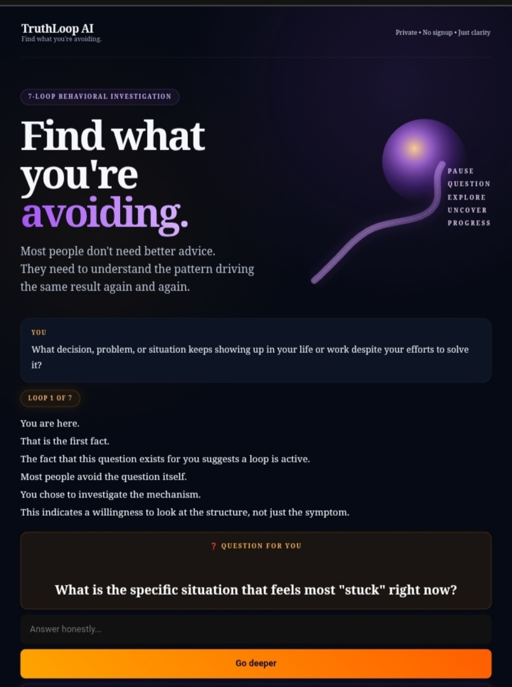
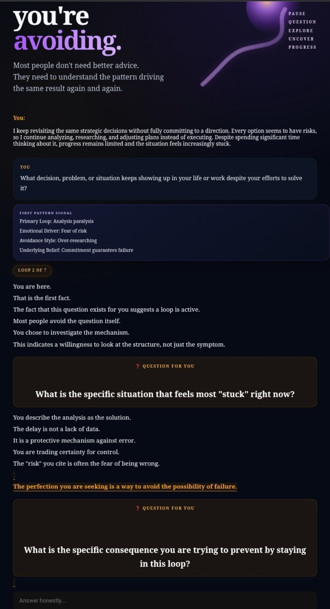
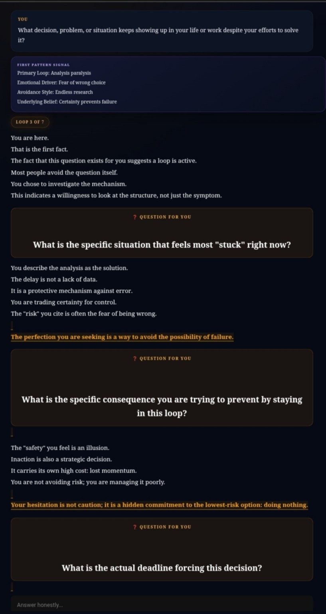
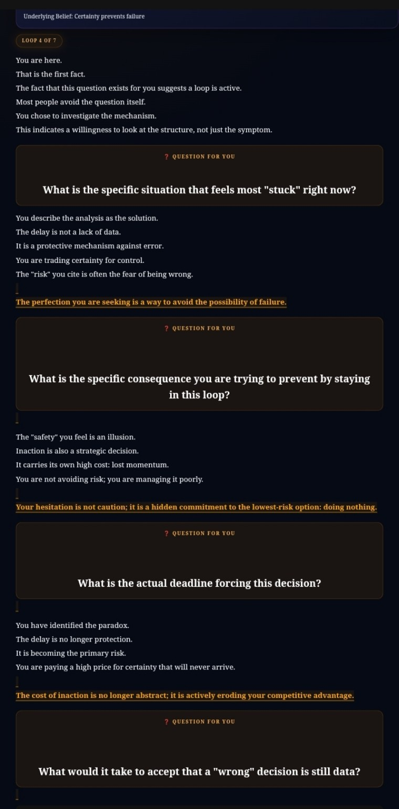
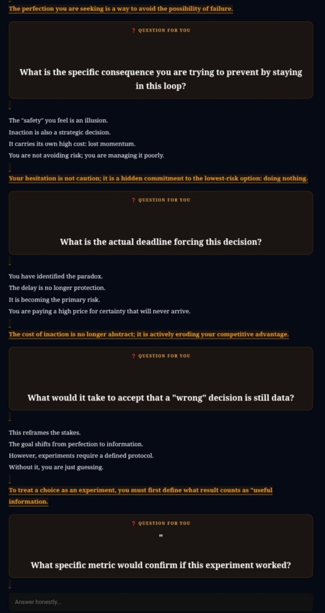
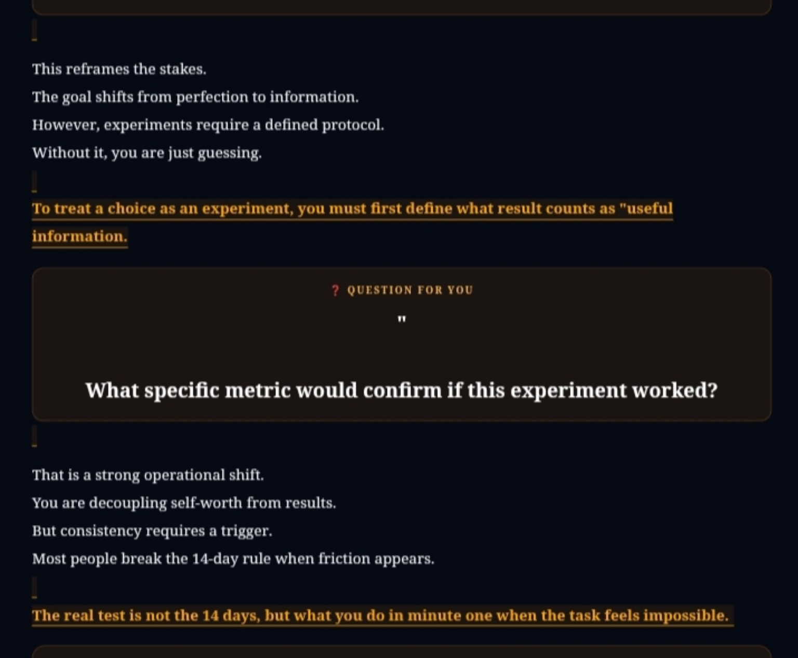
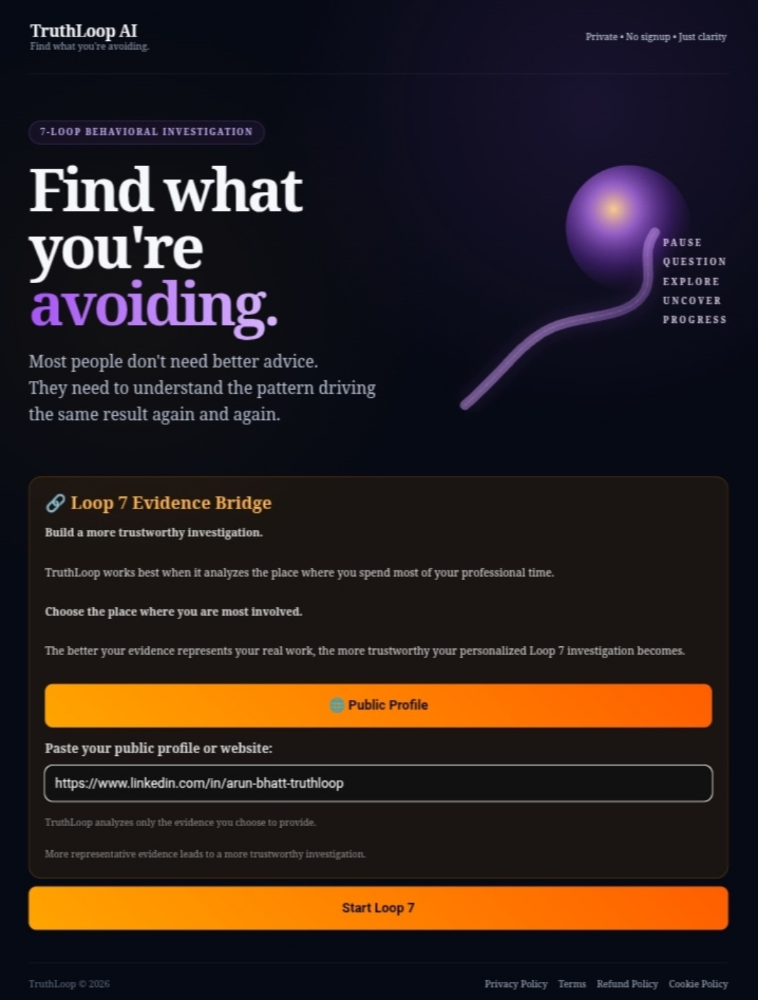
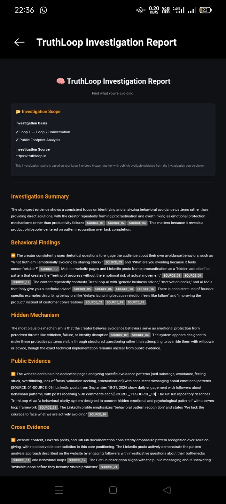
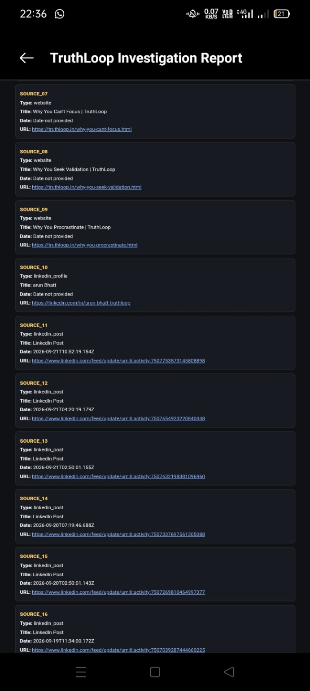

1. Conversation first
A guided 7-loop conversation progressively surfaces recurring tension, hesitation, protection, and the gap between awareness and action.
TruthLoop moves from a real conversation to behavioral patterns, public evidence, and a source-backed investigation report — so the pattern is examined, not merely advised around.
TruthLoop is designed for decisions, hesitation, execution resistance, overthinking, and repeated behavioral loops. The public-evidence layer exists to test the pattern against the footprint outside the conversation.
A guided 7-loop conversation progressively surfaces recurring tension, hesitation, protection, and the gap between awareness and action.
At Loop 7, a public profile or website becomes the bridge from what you say about the pattern to what your public footprint actually shows.
Findings are tied back to source IDs and clickable URLs so the investigation can be inspected instead of treated as an opaque AI verdict.
Trackable evidence sources across the public-footprint investigation, alongside the Loop 1 → Loop 7 conversation.
Progressive loops that move from the visible problem toward mechanism, evidence, contradiction, and next action.
These are real TruthLoop screens from Loop 1 through the Loop 7 evidence bridge.

The system begins with the situation that keeps returning despite attempts to solve it.

Recurring tension starts becoming explicit: analysis, risk, delay, protection.

The investigation asks what staying in the loop is protecting the user from.

Delay stops looking neutral when the investigation names its operational cost.

The conversation shifts from avoiding a wrong choice toward learning what a decision can reveal.

A useful experiment needs a measurable signal — not another round of abstract thinking.
TruthLoop asks for the public profile or website that best represents the work being investigated. More representative evidence makes the resulting investigation more inspectable.

The report combines the Loop 1 → Loop 7 case with public evidence and exposes the source trail behind the findings.


When public evidence, the conversation, and external signals align, TruthLoop does not need to manufacture a contradiction. The investigation can simply show the pattern, its protection mechanism, its observable cost, and what evidence supports the interpretation.
TruthLoop is not limited to founders. The same pattern-investigation structure applies anywhere repeated hesitation, analysis, protection, or execution resistance affects a real decision.
When every option stays open and analysis keeps replacing a committed direction.
When the plan is clear but the last mile keeps creating friction, resets, or new research.
When certainty, approval, or risk management quietly becomes the reason a decision remains unresolved.
When repeated work patterns, comparison, validation, or perfection keep shaping the next move.
These internal links are selected from the current sitemap so the landing page connects the product journey to the site's strongest pattern, decision, execution, and self-audit content.
TruthLoop is not therapy, does not diagnose mental health conditions, and is not a substitute for professional or crisis support. It focuses on patterns visible in the conversation and, where provided, public evidence.
Start with the situation. Let the seven loops go deeper. Then decide what evidence is worth checking.
Start TruthLoop →